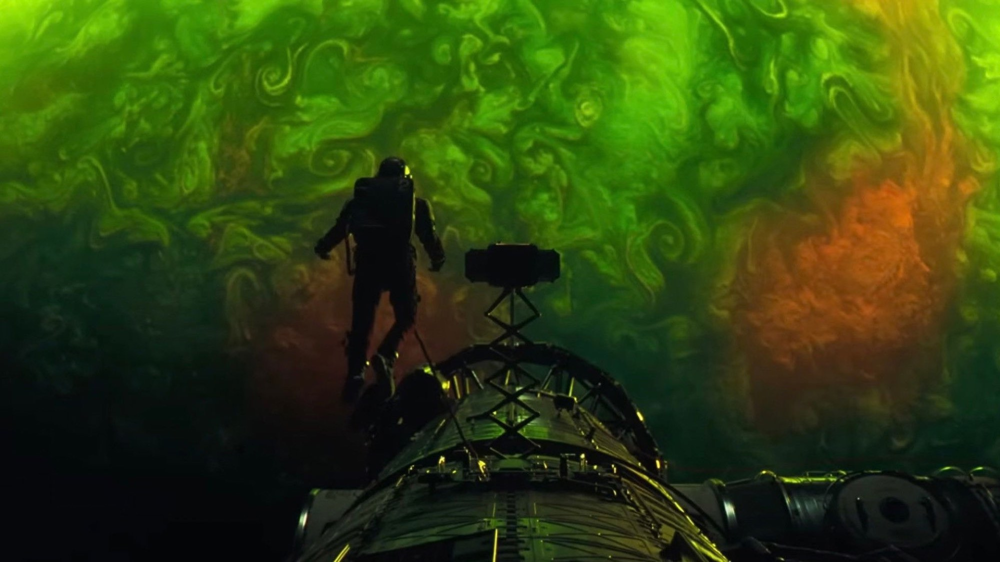
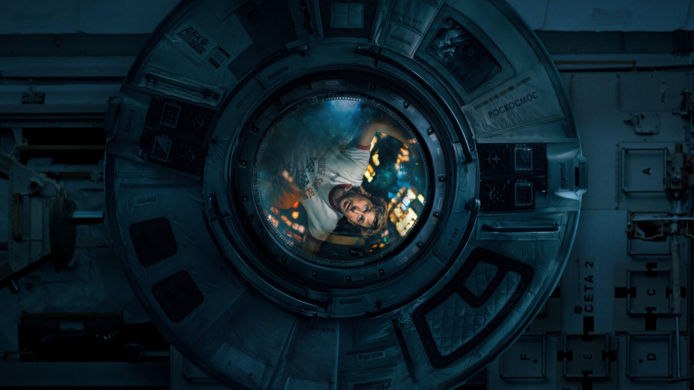

Project Hail Mary
Lord e Miller portano al cinema il romanzo di Andy Weir: hard sci-fi per tutti, un Gosling in stato di grazia e un alieno che ruba la scena
Ci sono film che si guardano e film che si vivono. Project Hail Mary, per noi, appartiene decisamente alla seconda categoria: lo abbiamo visto all'anteprima in 70mm all'Arcadia di Melzo ed è stata una di quelle serate che ti ricordano perché ami il cinema. A qualche giorno di distanza, con il film finalmente nelle sale italiane, possiamo dirlo con ancora più convinzione: Phil Lord e Christopher Miller hanno firmato uno dei blockbuster più riusciti del 2026.
Non siamo i soli a pensarla così. Il film, uscito nelle sale italiane il 19 marzo con il titolo L'ultima missione: Project Hail Mary, ha raccolto il 95% di recensioni positive su Rotten Tomatoes e una media di 77 su 100 su Metacritic, mentre il pubblico americano gli ha assegnato una A piena nei sondaggi CinemaScore. Nei mesi successivi la sua corsa al box office avrebbe superato i 685 milioni di dollari nel mondo. Ma i numeri spiegano solo in parte il fenomeno: proviamo a raccontare il resto, senza spoiler.
Di cosa parla Project Hail Mary?
Ryland Grace è un professore di scienze delle medie. Un giorno apre gli occhi a bordo di un'astronave, lontanissimo dalla Terra, senza ricordare chi sia né come ci sia arrivato. Pezzo dopo pezzo, la memoria torna e con lei la verità: il Sole si sta spegnendo, e lui potrebbe essere l'ultima possibilità dell'umanità. In questa missione disperata non sarà del tutto solo.
La storia viene dal romanzo del 2021 di Andy Weir, lo stesso autore di The Martian, ed è stata adattata da Drew Goddard, che proprio con The Martian aveva ottenuto una candidatura all'Oscar per la sceneggiatura. Accanto a Ryan Gosling ci sono Sandra Hüller nel ruolo di Eva Stratt, la funzionaria che guida il progetto sulla Terra, Lionel Boyce, Ken Leung e Milana Vayntrub. E poi c'è James Ortiz, che dà corpo e movimenti a un personaggio di cui parleremo tra poco.
Ryan Gosling regge tutto sulle sue spalle
Per buona parte del film Gosling è da solo in scena, e non si sente mai il bisogno di altro. Il suo Grace è un uomo comune, ironico, spaventato, a volte persino un po' vigliacco, che si ritrova a fare l'eroe controvoglia. È un registro che l'attore conosce benissimo, sospeso tra la comicità fisica di The Nice Guys e la malinconia di First Man, e qui lo porta a un equilibrio quasi perfetto. Antonio Cuomo su Movieplayer, che assegna al film 4,5 su 5, lo descrive come un protagonista del tutto a suo agio nel mondo costruito dai registi, umano e fragile ma determinato.
Anche David Fear su Rolling Stone individua in lui il motivo per cui il film non scivola mai nel melenso: Gosling sa passare dall'assurdo al sentimentale al drammatico senza strappi, e tiene insieme un'opera che sulla carta poteva diventare stucchevole. Non a caso, ad agosto 2026, la sua prova gli è valsa il premio come miglior attore ai Critics' Choice Super Awards, dove il film ha vinto anche come miglior titolo di fantascienza.
Un uomo qualunque, una stella che muore e un amico che non ti aspetti: la fantascienza può ancora commuovere.
Rocky, il vero colpo di genio
Il segreto meglio custodito del romanzo è anche la carta vincente del film. Rocky, il compagno di viaggio che Grace incontra nello spazio, non è un semplice effetto digitale: è un pupazzo fisico, manovrato e interpretato da James Ortiz, con il lavoro digitale della Framestore a completarlo. La differenza si vede in ogni inquadratura. Rocky occupa lo spazio, ha un peso, reagisce, e Gosling può davvero recitare con lui invece che con una pallina da tennis su un'asta.

Il risultato è una delle amicizie più tenere viste al cinema negli ultimi anni. La critica è quasi unanime su questo punto: per Movieplayer è il cuore emotivo dell'intera operazione, per Rolling Stone tra i due nasce un'alchimia autentica. Lord e Miller, che arrivano dall'animazione di The Lego Movie e dalla produzione dei due Spider-Verse, sanno esattamente come dare personalità a una creatura senza volto, e la loro esperienza si sente.
Hard sci-fi per tutti: com'è la regia?
La sfida più difficile era trasformare un libro pieno di calcoli, esperimenti ed equazioni in un film che non respingesse il pubblico. Lord e Miller ci riescono scegliendo il ritmo dell'avventura classica: la scienza c'è, è centrale per la trama, ma viene raccontata attraverso tentativi, fallimenti e piccole vittorie, con molta ironia. Il continuo andirivieni tra lo spazio e i flashback sulla Terra, che ricostruiscono come Grace sia finito lassù, tiene alta la curiosità e dà respiro alla lunga solitudine del protagonista.

Sul piano visivo il film è una festa. Dietro la macchina da presa c'è Greig Fraser, premio Oscar per Dune, e le riprese si sono svolte tra giugno e ottobre 2024, soprattutto agli Shepperton Studios nel Regno Unito. Le immagini dello spazio hanno una matericità rara, fatta di luce, colore e buio vero, e la colonna sonora di Daniel Pemberton accompagna le emozioni senza mai sovrastarle. Visto in pellicola 70mm, ve lo assicuriamo, è un'esperienza che toglie il fiato.
Cosa non funziona
Un capolavoro senza difetti? No, e alcuni appunti della critica sono giusti. Il primo riguarda la durata: due ore e trentasei minuti si sentono, soprattutto nell'ultima parte, che tende a dilatarsi più del necessario. Il secondo riguarda la profondità. William Maga sul Cineocchio, la voce più severa tra quelle che abbiamo letto, si ferma a 6 su 10 e osserva che la scienza resta più sfondo che vero linguaggio del film: i problemi si risolvono spesso in rapidi montaggi, i dilemmi morali vengono sciolti in fretta e il personaggio di Sandra Hüller, insieme alla crisi che vive il pianeta, resta ai margini.
Sono critiche fondate, che chi ha amato il romanzo potrebbe condividere. Ma bisogna intendersi su cosa volesse essere questo film: non un trattato di astrofisica, bensì un'avventura per famiglie nel senso più nobile del termine, quella che Rolling Stone accosta al cinema di Spielberg. Everyeye, che gli assegna 7,5, sottolinea proprio la capacità dei registi di mescolare toni diversi senza perdere il filo. E su questo terreno il film vince quasi sempre.
Dove vedere Project Hail Mary?
Dopo l'uscita in sala, dal 3 luglio 2026 Project Hail Mary è disponibile in abbonamento su Prime Video, ed è a noleggio sulle principali piattaforme digitali come Apple TV, Rakuten TV e CHILI. Il nostro consiglio è di guardarlo sullo schermo più grande che avete a disposizione, con l'audio alto e senza distrazioni: è un film che chiede di lasciarsi trasportare.
Una storia hard sci-fi comprensibile a tutti e con tantissimo cuore. Se da un lato la durata pesa e la scienza a volte resta sullo sfondo, dall'altro Gosling è perfetto e Rocky è già un'icona. Per noi uno dei film più belli del 2026: da vedere e rivedere!
Domande frequenti
Dove vedere Project Hail Mary in streaming?
Dal 3 luglio 2026 è disponibile in Italia in abbonamento su Prime Video e a noleggio su Apple TV, Rakuten TV e CHILI.
Quanto dura Project Hail Mary?
156 minuti, cioè due ore e trentasei minuti.
Da quale libro è tratto Project Hail Mary?
Dall'omonimo romanzo di Andy Weir del 2021, l'autore di The Martian; la sceneggiatura è di Drew Goddard.
Fonti consultate (8)
- Wikipedia – Project Hail Mary (film)
- Movieplayer – L'ultima missione: Project Hail Mary, la recensione (Antonio Cuomo)
- Il Cineocchio – L'ultima missione: Project Hail Mary, la recensione (William Maga)
- Everyeye Cinema – Project Hail Mary recensione
- Rolling Stone – Project Hail Mary review (David Fear)
- Wikipedia – Greig Fraser
- Wikipedia – Drew Goddard
- JustWatch / TMDB – dove vederlo in Italia